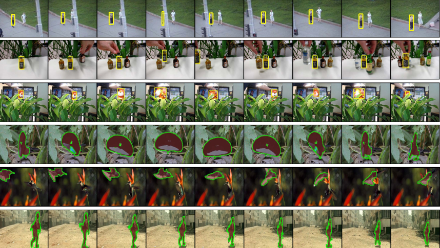

Track and Segment: An Iterative Unsupervised Approach for Video Object Proposals

Presented at CVPR 2016
People
Abstract
We present an unsupervised approach that generates a diverse, ranked set of bounding box and segmentation video object proposals---spatio-temporal tubes that localize the foreground objects---in an unannotated video. In contrast to previous unsupervised methods that either track regions initialized in an arbitrary frame or train a fixed model over a cluster of regions, we instead discover a set of easy-to-group instances of an object and then iteratively update its appearance model to gradually detect harder instances in temporally-adjacent frames. Our method first generates a set of spatio-temporal bounding box proposals, and then refines them to obtain pixel-wise segmentation proposals. We demonstrate state-of-the-art segmentation results on the SegTrack v2 dataset, and bounding box tracking results that perform competitively to state-of-the-art supervised tracking methods.
Paper
|
|
Additional Materials
- Supplementary materials to the main paper
- Results video
Source Code
Please download VS_release.tar.gz and read the README inside.
VS_release.tar.gz (BETA)
SegTrackv2.tar.gz
VSNet.tar.gz
Acknowledgments
This research was supported partially by:
- NVidia hardware grant
- Amazon Web Services grant
Comments, questions to Fanyi Xiao